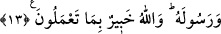

ALLAH YAPTIKLARINIZDAN
HABERDARDIR
12. Ey îman edenler! Peygamber ile gizli bir şey konuşacağınız zaman bu
konuşmanızdan önce bir sadaka veriniz. Bu sizin için daha hayırlı ve daha temizdir.
Şâyet bir şey bulamazsanız, bilin ki Allah bağışlayandır, esirgeyendir.
13. Gizli bir şey konuşmanızdan önce sadakalar vermekten çekindiniz mi? Bunu
yapmadığınıza ve Allah da sizi affettiğine göre artık namazı kılın, zekâtı verin
Allah’a ve Rasûlü’ne itâat edin. Allah yaptıklarınızdan haberdardır.
“Ey îman edenler! Peygamber ile gizli bir şey konuşacağınız zaman…” Yâni ey
hâlis ve samîmî bir îmanla inananlar! Rasûlullah (s.a.) ile gizli konuşmanızı gerektiren
mühim bazı işleriniz için gizli konuştuğunuzda… demektir.
Bazı tefsirlerde, “gördüğünüz rüyâ hâlinin açıklanması için onunla gizli
konuştuğunuzda” açıklaması yer almaktadır. Bu âyette insanların tâbi oldukları
büyüklerine rüyâlarını nasıl arz edeceklerine dâir bir yol gösterilmektedir. Bundan da
sâliklerin gördükleri rüyâ ve tâbir edilmesinin onlar için çok önemli olduğu
anlaşılmaktadır. Öyle ki müridin, gördüğü rüyâsını şeyhine mutlaka arz etmesi gerekir.
Şeyhi tâbir etsin veya etmesin fark etmez. Çünkü Allah Teâlâ “Allah size, mutlaka
emanetleri ehli olanlara vermenizi ve insanlar arasında hükmettiğiniz zaman
adâletle hükmetmenizi emreder” (en-Nisa, 4/58) buyurmuştur. Bu rüyâ da müridin
nezdinde bir emanettir, onu mutlaka şeyhe tevdî etmesi gerekir. Çünkü bunda onun için
çok büyük bir fayda; yol almasında destek ve kuvvet vardır. Peygamberimiz (a.s.)’ın
“Rüyâ yorumlandığı gibidir”[15] buyurduğu vechile rüyânın yorumlanmasında güçlü bir
etkileyicilik vardır.
“Bu konuşmanızdan önce bir sadaka veriniz.” Yâni bu konuşmanızdan önce lâyık
olanlara sadaka veriniz. Hz. Ömer (r.a.)’ın dediği gibi, arablara verilen en üstün
meziyet şiir söyleme kabiliyetidir. Kişi ihtiyacından önce şiirini söyler, cömert ve
şerefli kimseden şiirle yardım ister; alçak ve âdî kişiler de şiirle yerilir. Bu cümlede